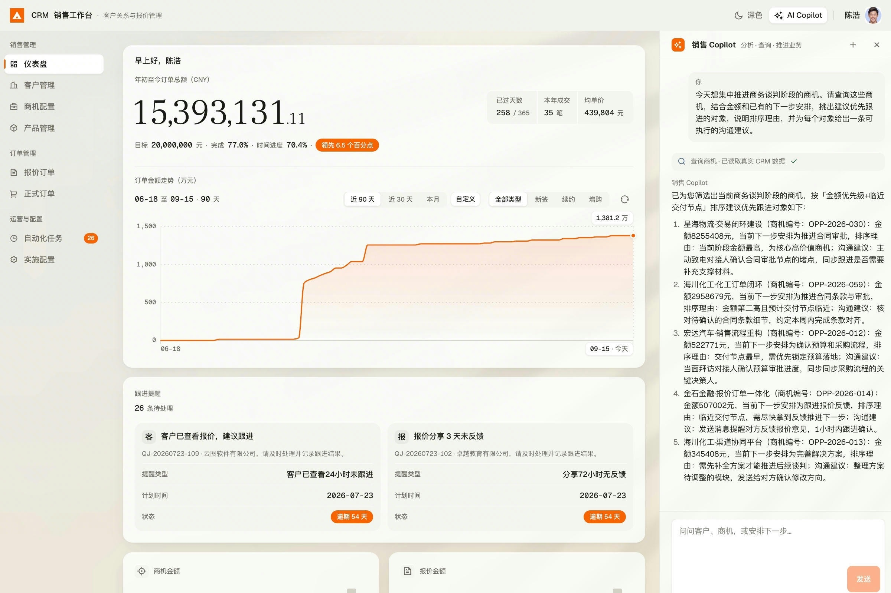
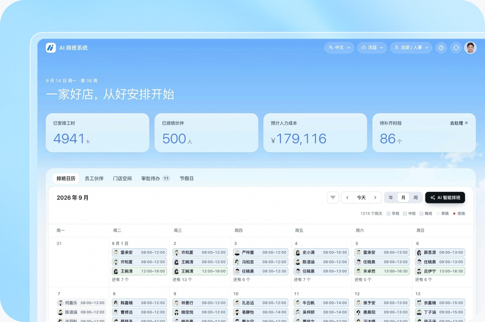
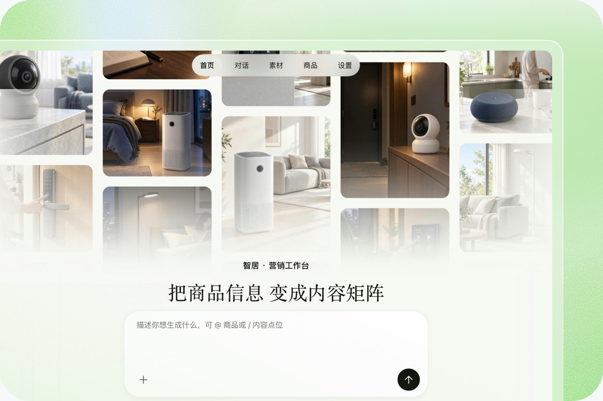
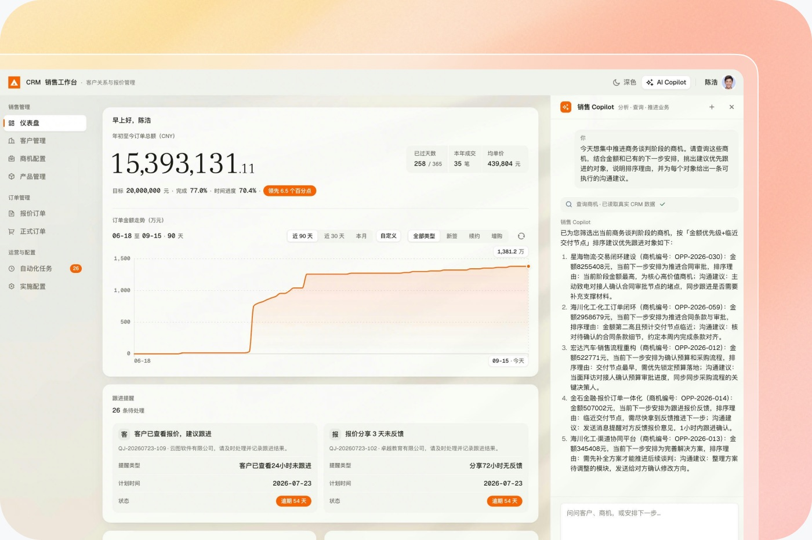
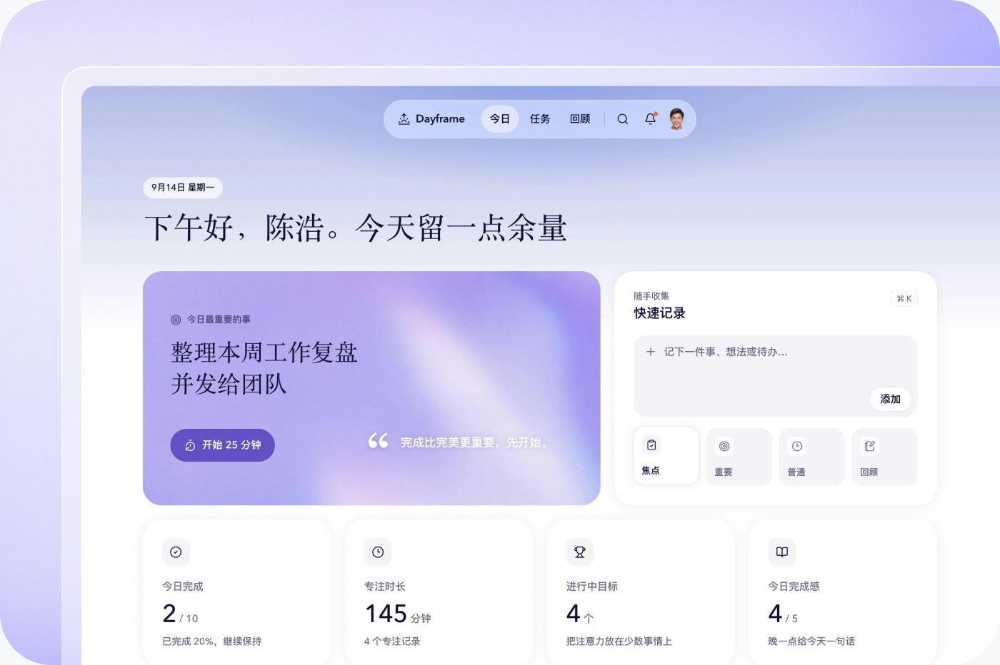

数据已经在多维表格里
表格太局限？让 AI 基于现有数据，开发专属系统，落地业务流程和丰富功能。
让 Agent 以多维表格为数据底座搭建系统，
只需一句指令，前端页面、后端数据、权限管理全部就绪。
使用其他 Agent？

传统业务数据和业务系统之间，隔着服务器、数据库、账号体系和一整个工程团队。现在，只需一句话。
表格太局限？让 AI 基于现有数据，开发专属系统，落地业务流程和丰富功能。
难以协作、版本混乱？让 AI 帮你把表格变成系统，集中管理数据、协作与权限。
AI 写好代码，部署和数据怎么办？多维表格提供前后端部署，集成身份与权限能力，打通 AI CODING 的最后一公里。
自动生成员工排班表，工时成本实时核算，班次冲突智能提醒。

商品信息一键生成图文视频矩阵，素材分类管理，多端预览分发。

客户商机统一管理，跟进记录自动同步，销售数据实时监控。

任务清单、专注计时、每日回顾一体化，进度自动统计。

CLI 专为 AI 调用设计：表结构清晰可读，报错提供修复指引，缺权限引导授权。
数据就在多维表格里，团队随时查看、编辑、协作，用仪表盘掌握业务进展。
复用飞书登录与多维表格权限，管理谁能看、谁能改，无需从头开发。
打通消息、文档、日历等飞书业务，让 AI 串联数据查询、计算、存储与汇报。